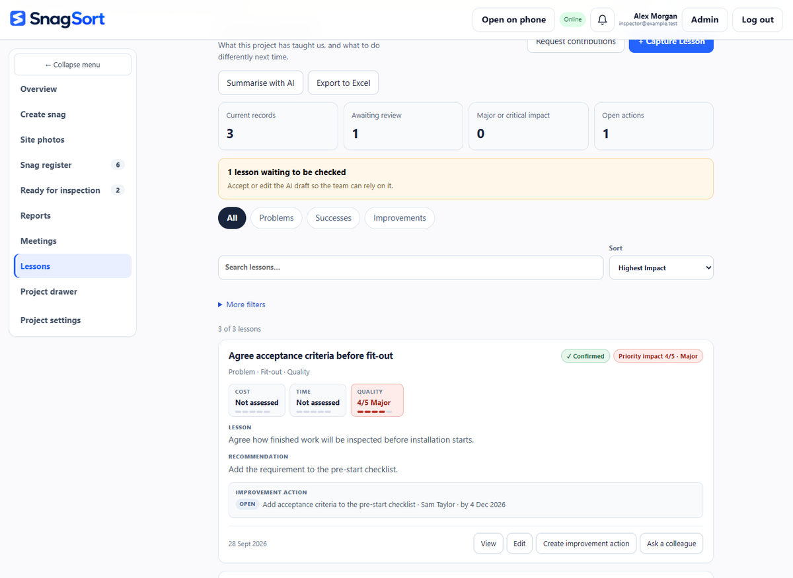

Capability case study
Making Lessons Learned Actually Useful
Turning lessons from a document filed at project close into a live register designed to be reviewed, agreed and acted on.
About this case study. This is a capability case study and product demonstration, not a client project. It describes a common industry problem and how GMBF approaches it. The screens show sample data from a fictional demonstration project, and the outcomes described are what the workflow is designed to support, not measured results.
The problem
Lessons that nobody reads.
Lessons learned are often gathered in a workshop at the end of a project and written into a report. The report is filed, and the next project starts without it.
The government’s Teal Book makes the same point: recording a lesson in a register “does not mean people will read it”, and teams should not rely solely on set-piece workshops at the end of a phase.1 What is usually missing is structure: a consistent record of what happened and why it mattered, someone to check it, an owner for the action, and a route back into the next project’s start-up.
The approach
A register that closes the loop.
The register is designed so that lessons are captured during the project, reviewed with the people involved, agreed, assigned an action and carried into the next project, in line with UK government project delivery guidance.
Each lesson record brings together what happened, its impact, what was learned and the action taken: the four elements the Teal Book says a lesson record should combine.1 GovS 002 expects relevant lessons to be identified and applied at the start of new work, and captured, evaluated and acted on throughout.2
AI can help by summarising discussions or grouping similar lessons, but its output is treated as a draft. A lesson only counts once someone with knowledge of the project has checked it.
How it works in the demonstration
Capture, check, act.
Two screens from the product demonstration, using sample data, show the register and a single lesson.


What it is designed to change
Lessons that change something.
Qualitative changes the register is designed to support, not measured client results.
Captured early
Lessons are recorded while the project is running, not reconstructed at the end.
Agreed
Each lesson reflects an agreed view, checked by someone who knows the work.
Owned
Actions have owners, so lessons lead to a change.
Reused
Lessons are searchable at the start of the next project.
Sources
Independent sources
Government, standards bodies and industry bodies. GMBF has no connection with these publishers.
- Government Project Delivery, The Teal Book, Chapter 38: Learning from experience (published 29 July 2024, last modified 1 July 2026). https://projectdelivery.gov.uk/teal-book/home/part-f-solution-delivery/chapter-38-learning-from-experience/
- Government Project Delivery, Government Functional Standard GovS 002: Project delivery, version 2.1 (published 1 September 2025): section 2 (principles), clause 6.4.5 (initiating) and clause 8.10 (learning from experience). https://projectdelivery.gov.uk/library-products/government-functional-standard-govs-002-project-delivery/